Contents
- Installation
- Functions
Installation
일단 intro에서 설명을 드렸다시피, cowork는 현재 Desktop 에서만 지원한다. (Terminal, Web 지원 x)
https://claude.com/download
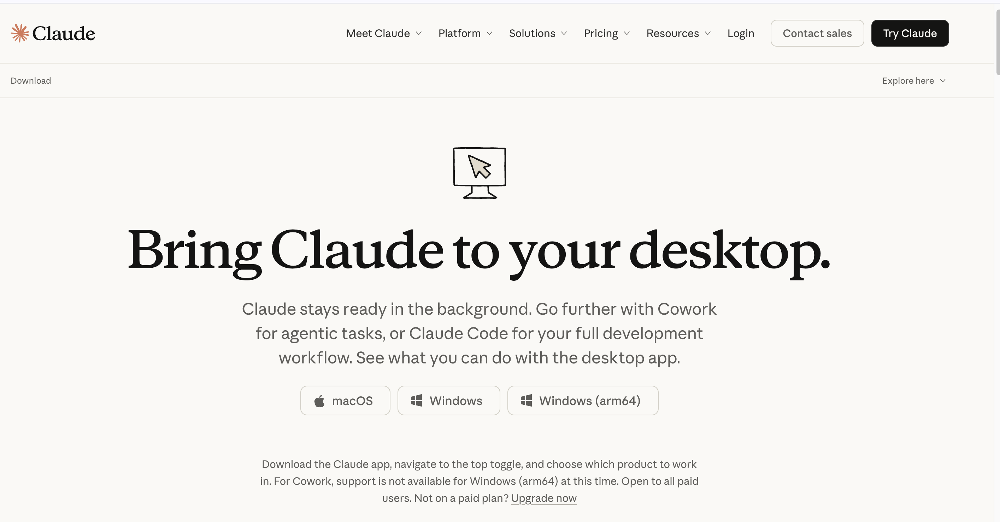
설치를 쭉 진행한 후, 로그인 하면 이렇게 ChatGPT와 동일한 UI의 창이 뜨게 된다.
오늘 우리는 핵심기능인 Cowork에 대해서 오늘 자세하게 어떤 기능들이 있는지 살펴보고자 한다.
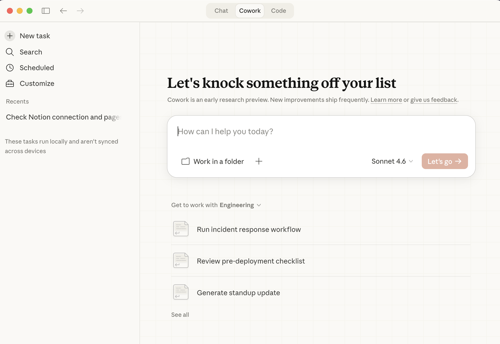
Claude Functions
다음 기능들을 하나씩 차근차근 살펴보자.
- Working space
- CLAUDE.md
- Model Selection
- Tools (Read, Write, Bash, Glob, Grep 등 20+ 도구)
- Skills (커스텀 자동화)
- Task System & Subagents
- Context Window 메커니즘
- Memory 시스템
- Settings & Configuration
- Sandbox 환경
Working space
항상 작업을 시작하기 전에 작업 폴더를 지정해주어야 한다.
가장 중요한 사실은 여기서 Claude는 이 작업 안에 파일, 폴더를 생성하고 작업을 진행한다.
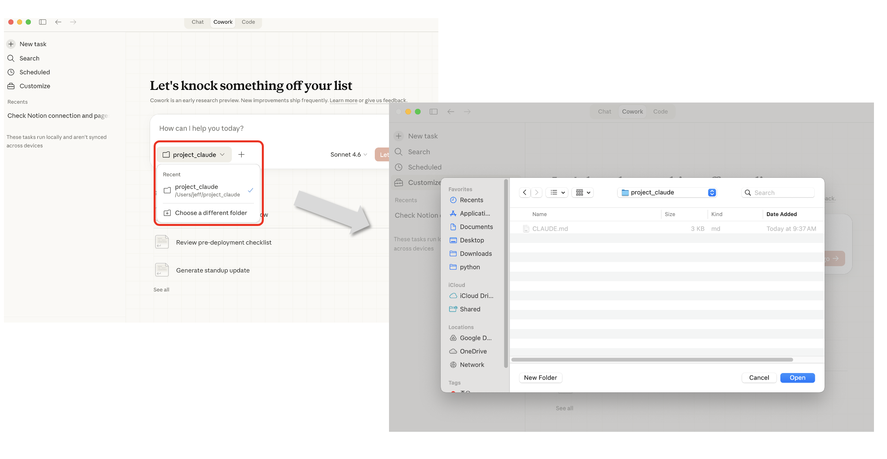
CLAUDE.md
프로젝트를 시작하면, 작업공간을 정한후 그 다음에 해야할 일은 어떤 프로젝트인지 Claude에게 설명해주어야 한다는 점이다. 가장 쉬운 방법은 채팅창에 이 프로젝트의 목적과 어떤 것을 달성하고 싶은지 어떤 도구들을 달성을 하기 위해서 사용하면 좋은지 최대한 자세하고 논리적으로 적어주는게 중요하다.
1. 프로젝트 목적
2. 원하는 결과
3. Process or plan이 있다면 알려주기
4. 프로젝트 실행에 도움이 되는 도구/ skill알려주기.
자연어로 치게 되면 오른쪽 중간에 CLAUDE.md파일이 보인다. 클릭하면. 창이 하나 뜬다.
(대화에서 내가 이 프로젝트에서 무엇을 할지에 대해서 자세하게 설명하니 Claude가 자동으로 이 파일을 채워넣어 버렸다, 혹은 수동으로 수정하거나 작성해도 좋다)
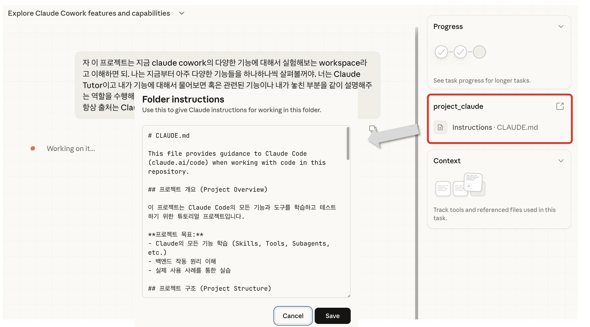
여기서 이 CLAUDE.mdfile 파일이 가장 중요한 파일인 이유는. 매번 채팅을 할때마다 prompt에 같이 들어가기 때문이다. 즉 Claude가 매번 대화할때마다 이거를 읽는다.
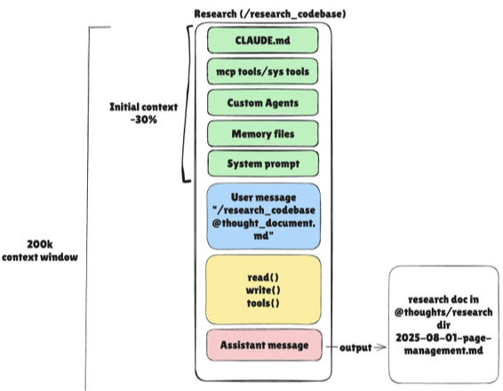
따라서, Claude가 하는 모든 작업은 이 CLAUDE.md 파일을 참고해서 하는 행동이기 때문에, 굉장히 중요하다는 것이다.(작업공간내부에는 무조건 CLAUDE.md파일이 하나 존재한다)
Model
다음, 우리는 원하는 model을 선택할 수 있다. 일단 Gemini_flash처럼 빠른 답변을 하는 녀석이 Haiku이고, opus는 반대로 굉장히 고 성능을 보이는 비싼 모델이라고 생각하시면 된다. Extended thinking의 경우 모델 자체의 추론(thinking) 시간을 Anthropic 측에서 늘려주는 것이다. 이렇게 되면 토큰 사용량이 증가하는 대신에 더 퀄리티 좋은 답변을 얻을 수 있다.
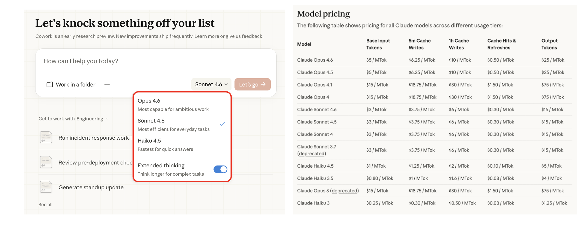
Schedule
업무를 진행할 때, 회사에서 가장 많이 쓰는 기능이 Calendar and Scheduling일 것이다. Claude는 결국 회사, 회사원들을 target으로 Cowork을 만들었고, 이렇게 매일/매시간/매주/ … 이런 식으로 주기적으로 어떤 일을 시킬 수 있도록 서비스를 제공한다. 좌측의 Scheduled bar를 누른 후에, 어떤 주기적인 일을 시킬지 작성하자.
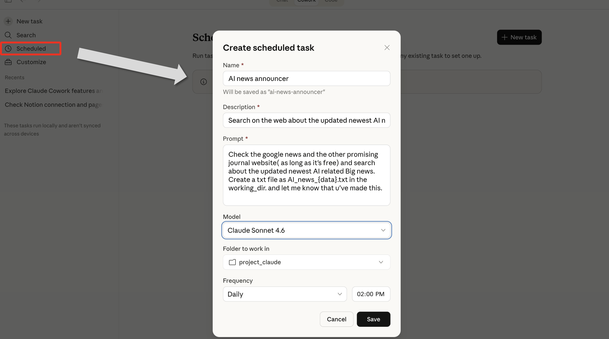
이제 이렇게 반복업무가 생성이 되었다.
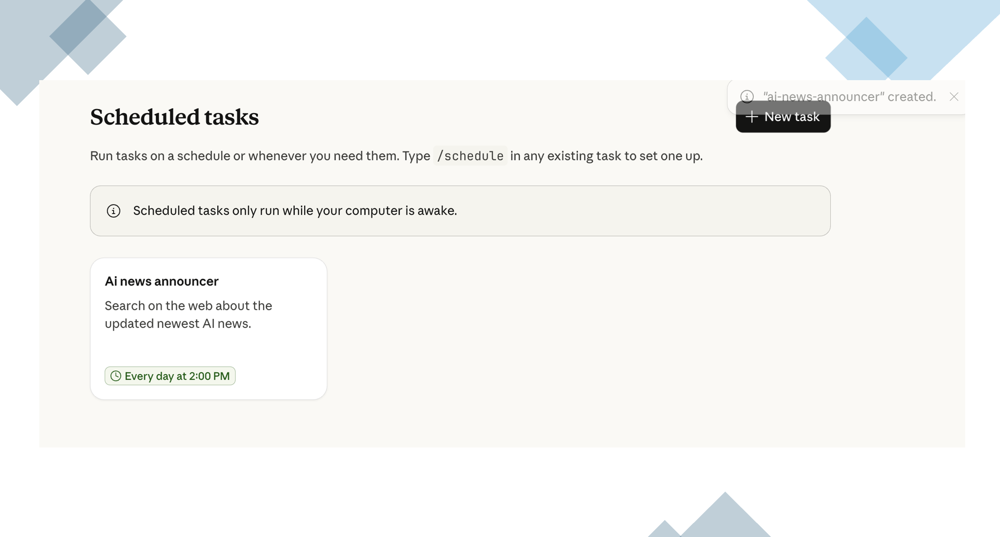
재미있는 사실은 그냥 자연어로, 수정 생성을 시켜도 알아서 진행을 한다는 사실이다.
(이 모든 것이 가능한 이유는 Claude의 코드를 이해·수정·생성하는 능력이 매우 뛰어나기 때문이다.)
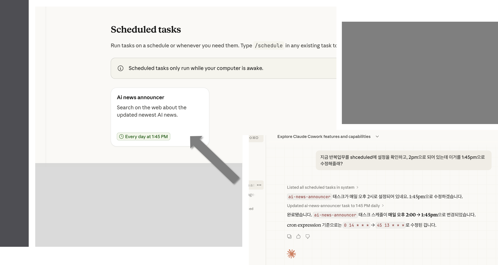
우측처럼 txt파일을 생성하여 보여주는 것을 알 수 있다.
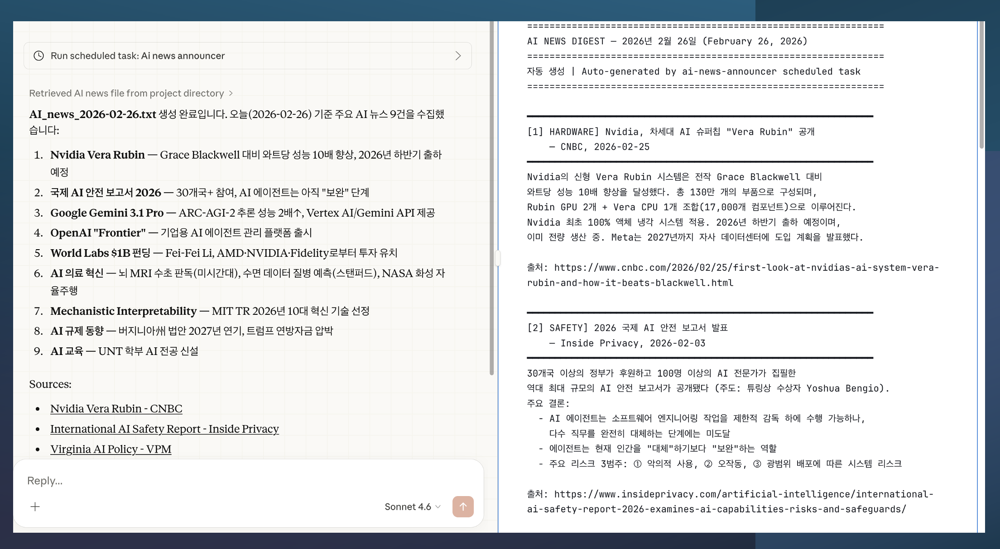
User Interface
채팅을 치면 즉 유저가 어떤 일을 시키면 항상 우측 sidebar에는 (Progress, project_name, Context가 뜬다)
1. Progress - Claude가 어떤 plan을 세웠고, plan을 완료 or 실패 했는지 or 진행중 인지.
2. Project_name은 현재 작업공간에 어떤 파일들이 있고, 생성되었는 지를 보여준다. (AI_news.txt파일 생성 됨)
3. Context의 경우 방금 작업을 진행할 때 어떤 도구와 스킬을 사용하였는지 나타난다. (AI news announcer라는 스킬을 Claude가 스스로 만들었고, 사용하였다. 그리고 Web search connector(tool)을 사용하였다)
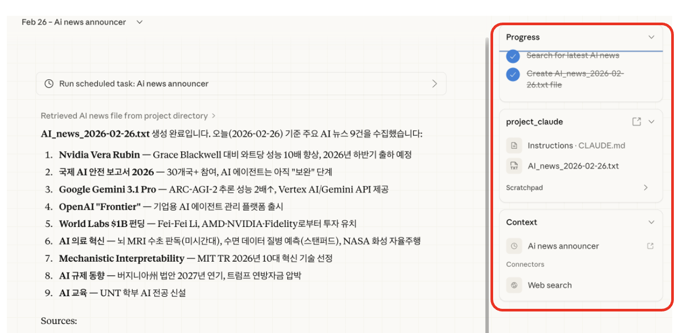
자 이제 왼쪽 사이드바에서 Customize를 열면, 이렇게 가방이 하나 나온다. 진짜 회사원 가방이에 들어 있는 거는 그 회사원의 skill / tool (connectos) / Plugin이다.
(Agentic AI 이론시간에 다루었지만, plug-in은 쉽게말해 tool box이다. 즉 어떤 일을 하기 위해서는 특정 tool들의 조합, data(resources), code, 혹은 agent 까지 필요할 수 있다. 그 모든 것들을 한개의 패키지로 묶은데 Plug-in이다)
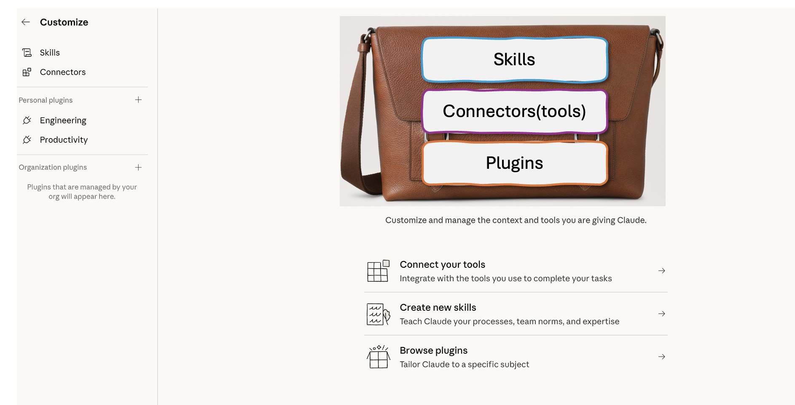
Skills
스킬은 사실 우리가 prompt에 장문의 글을 써서 Claude or GPT에 무언가를 요청한 경험이 굉장히 많을 것이다. 그 반복적인 어떤 굉장히 많은 요구를 해야하는 작업을 ‘~skill 사용해’ 이런식으로 대신 간편하게 요청하는 것이다.
좌측 사이드바에서 skill을 선택하자. 거기서 skill-Creator라는 스킬이 자체적으로 내장되어 있다. 즉, 우리가 Claude한테 ~skill 만들어줘 하면 자체적으로 이 skill-creator를 사용하는 것이다.
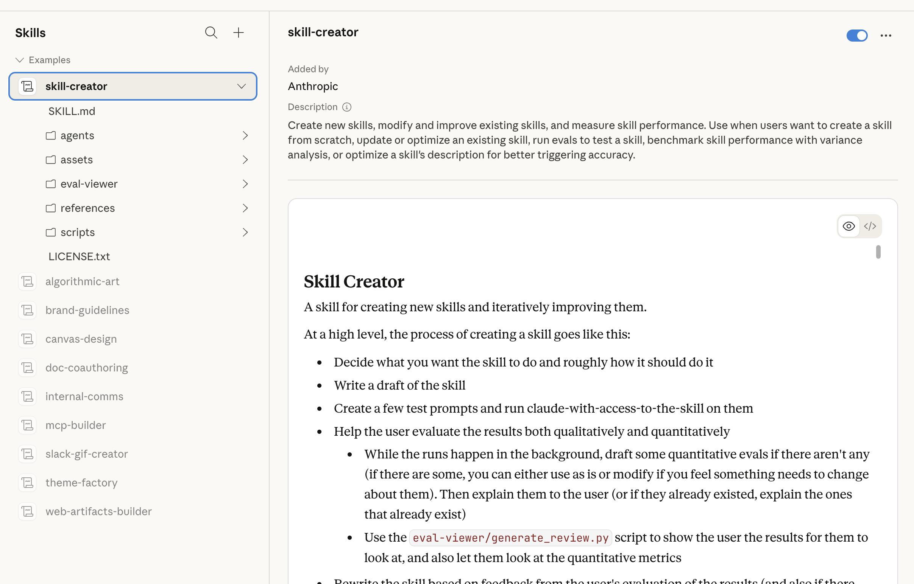
(Theory part)에서 다루었지만, 우리가 “~스킬을 사용해줘” 라고 지정해주지 않아도, Claude는 사용자가 어떤 스킬을 가지고 있는지를 인지한다. 그 방식은 Context window에 사실 list of skills가 같이 들어가기 때문이다.(우측 경우)

반대로, 특정 스킬을 사용하라고 명령하면 좌측처럼 Skill의 설명이 적혀있는 SKILL.md 파일을 그대로 Context window에 넣는다.
사용할 Skill을 알려주지 않아도, 현재 내가 가지고 있는 Skill을 Claude가 인지한다.
자 스킬을 생성해보자. +를 누르니, 이렇게 채팅으로 생성할 것인지 Write skill instructions으로 직접 쓸것인지 나온다.
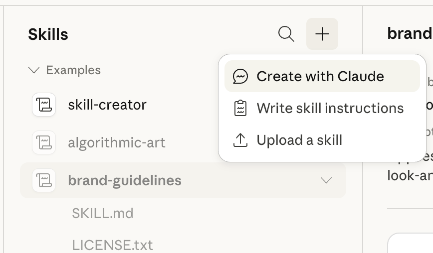
노션 페이지 내용 문법 오류, 오타, 내용오류, 논리구조 오류 를 감지하고, 수정하는 skill을 작성해보자.
결국 모든 것을 그냥 대화로 설정할 수 있다. 스스로 Skill.md파일을 작성해서 정의한 것을 볼 수 있다.
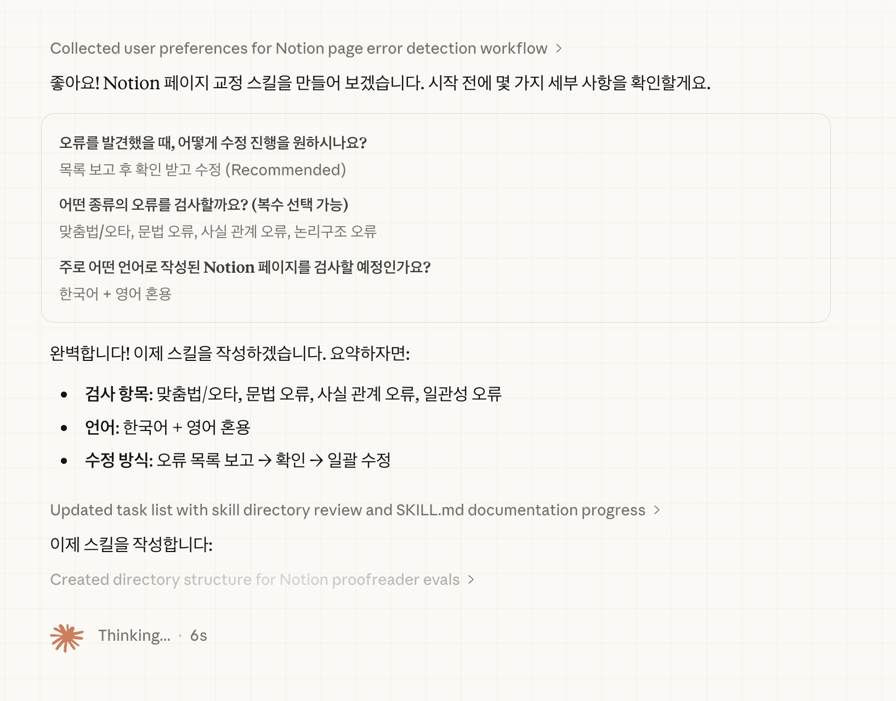
Connectors
이번시간에는 Claude Cowork와 연결해서 사용할 수 있는 Connectors - tools에 대해서 살펴보자.
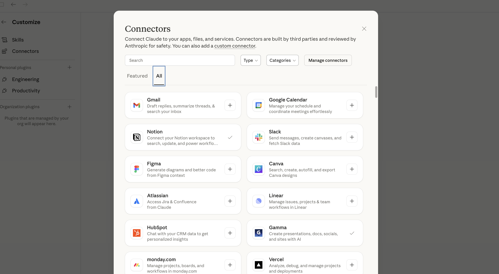
좌측 Side bar에 들어가서, Connectors를 누르면 이렇게 굉장히 많은 연결가능한 외부 APPLICATIONS들이 보인다. 여기서 연결하고 싶은 것에 그냥 +를 누르기만 하면 된다.
연구자들에게 가장 좋은 Tool인 Consensus 를 연결하였고, 사용해보자. 우측의 Context에서 Consensus 도구를 사용했다고 표시가 뜬다.
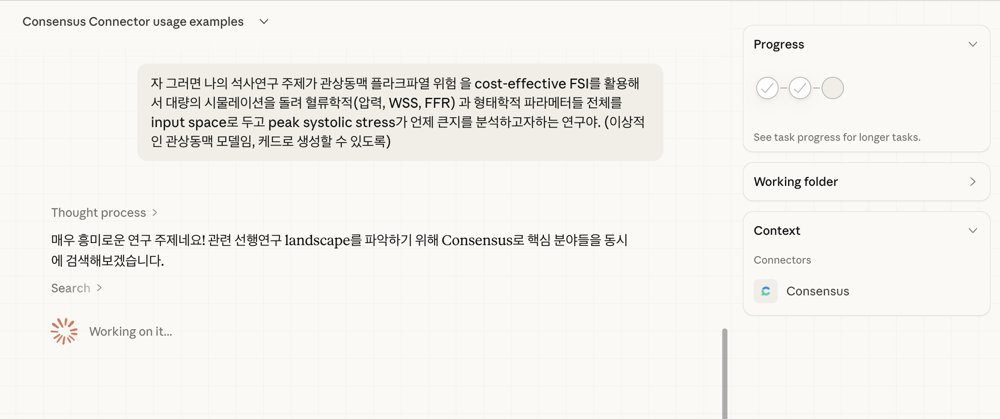
이 tool 자체는 결국 선행연구 데이터들을 기반으로, 나의 질문을 답해준다. 따라서, 문헌 검색 정보탐색, 그리고 연구방향성을 다시 잡을 때 굉장히 좋은 도구이다.
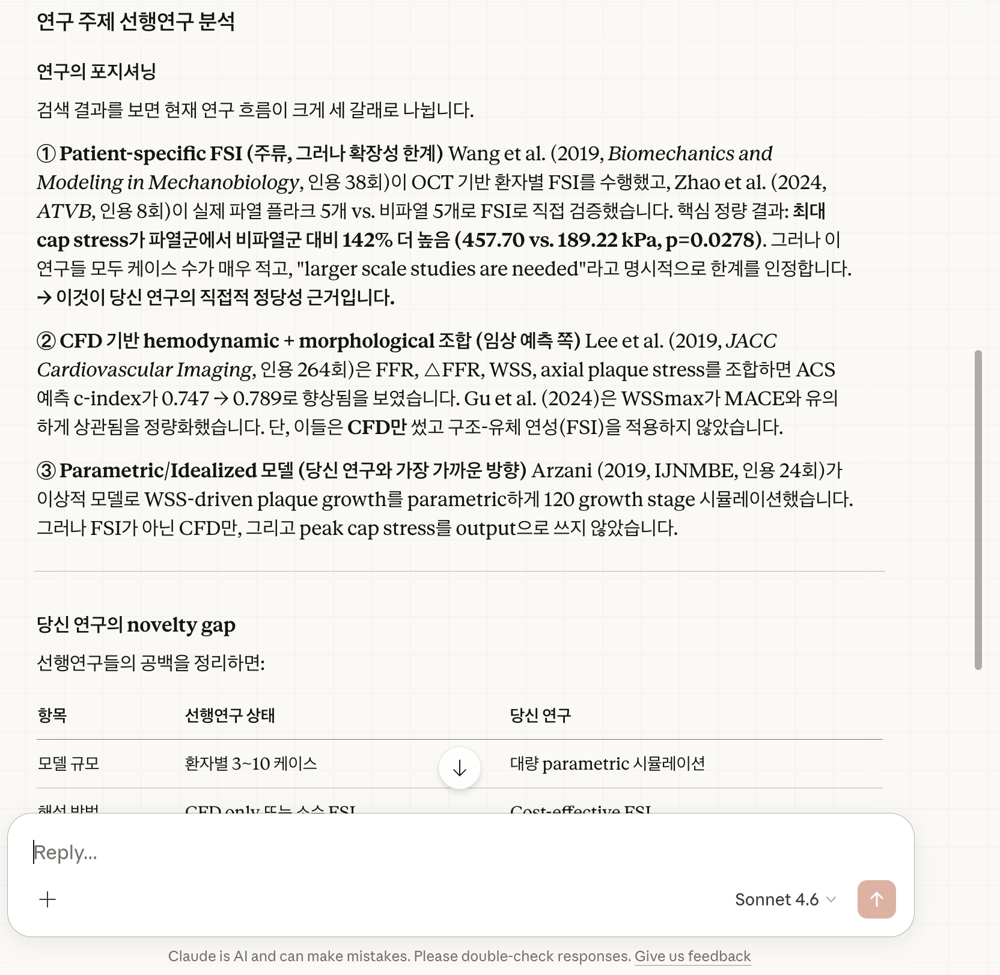
그리고 이렇게 Connectors에 들어가게 되면 현재 내가 연결되어 있는 도구들의 리스트가 나오고, 바로 사용할 수 있는 상황인 것이다.
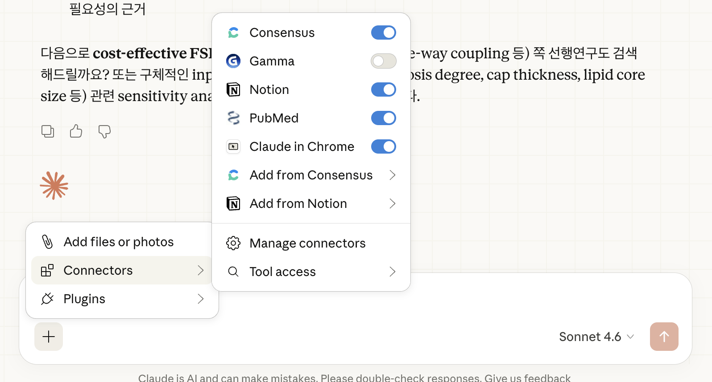
Plug-ins
마지막으로 플러그인은 종합 페키지이다. 우리가 단순히 스킬은 반복되는 명령어를 축약한거라면, Plug - in은 반복되는 어떤 프로젝트를 하나의 페케지로 묶은 것이다. 즉, 더 큰 규모의 작업 안에는 코드 실행, 또 다른 에이전트, 자원, 그리고 도구와 스킬들이 들어 있을 것이다. 이러한 모든 덩어리를 반복해서 혹은 한번에 실행하기 위한 툴이다.
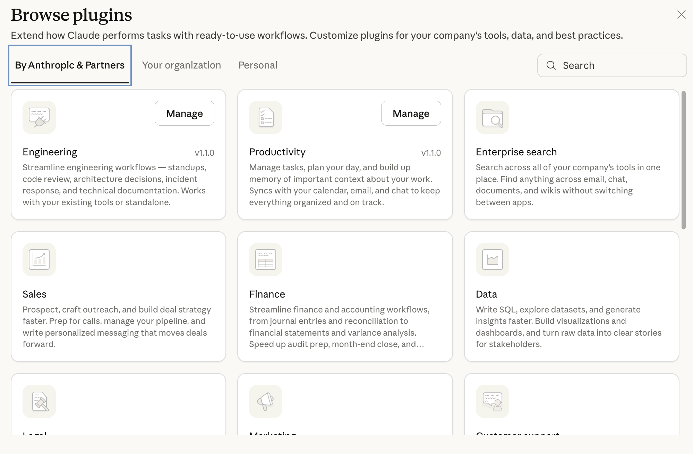
여기서 Engineering Plug-in을 살펴보자. 정말 재미있는 사실은 정의된 Commands, Skills들이 이미 존재한다는 것이다. 즉 이 Engineering 세트를 활용하면 저 skill들을 최우선으로 사용한다.
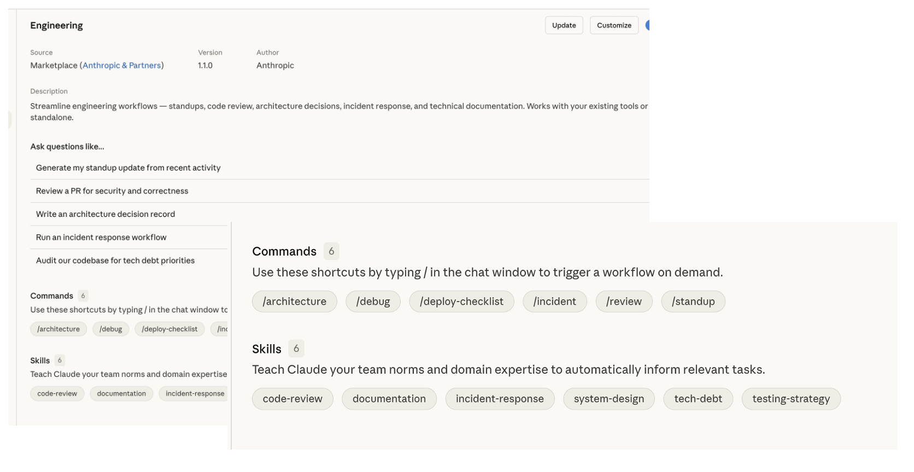
뿐만아니라, 연결된 도구들도 미리 정의되어 있다. 즉 어떤 일을 해결 하기 위해서, 미리 자원(도구)와 명령어, 스킬들의 세트가 준비 되어 있는 것이다.
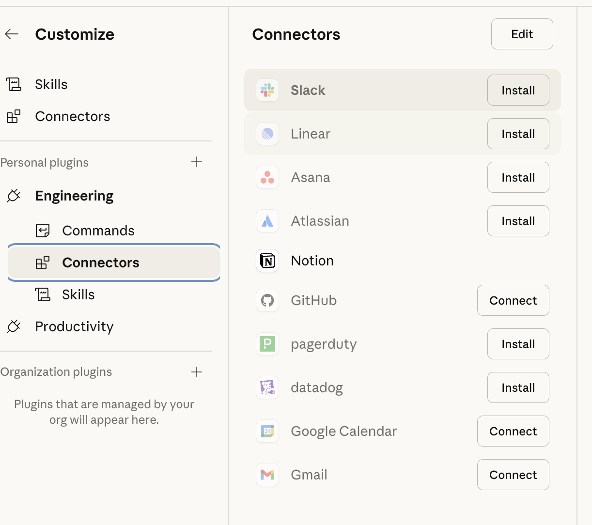
Conclusion
지금까지 Claude Cowork의 기능들에 대해서 하나씩 알아보았다.
이런 생각이 든다. 결국 정말 지시를 잘하는 사람이 많은 것을 얻겠구나. 그러니까 눈앞에 레고 조각들이 흩어져 있을때, 적절히 잘 조합하는 사람들이 많은 것을 얻을 것이다. 지금 레고 조각들이 다양한 모양으로 계속해서 끊임없이 너무 빠른 속도로 생겨나고 있다. 너무 서두르지 말고 천천히 한 조각씩 맞춰나가 보자.